跳到教程正文
跳到教程正文你看到：MACD在零线上，正柱逐根变长
这说明什么：快均价高于慢均价，且差值相对信号线进一步增强。
还不能说明什么：不表示价格每根都上涨或下一根必涨。
从零理解的中文读图课 · 入门
MACD看快均线和慢均线相差多少，再用一条较慢的信号线跟踪这个差。柱子显示两条线之间的差距，帮助看涨跌力量有没有加快。
模拟资产，非真实历史或预测。每根为1小时已收盘K线；展示48根，指标另用前72根预热。图较宽时左右滑动，或展开数值表。
MACD 12/26/9: 0.47 / Signal 0.33 / Hist 0.14 · 末根已收盘读数
副图黑实线MACD、蓝灰虚线信号线、柱为两线之差。柱转正不等于MACD本身转正。
最后一根：开 97.81，高 97.99，低 97.39，收 97.66；成交 9,786 股。先在图最右边找到它，再与表格核对。
| 时间 | O | H | L | C | 成交量 |
|---|---|---|---|---|---|
| 01-04 00:00 | 96.10 | 96.46 | 96.01 | 96.08 | 14490 |
| 01-04 01:00 | 96.08 | 96.29 | 95.75 | 96.21 | 24098 |
| 01-04 02:00 | 96.21 | 96.43 | 95.86 | 96.23 | 23737 |
| 01-04 03:00 | 96.23 | 96.42 | 95.97 | 96.42 | 17092 |
| 01-04 04:00 | 96.42 | 96.55 | 96.18 | 96.39 | 7361 |
| 01-04 05:00 | 96.39 | 96.42 | 96.16 | 96.34 | 6661 |
| 01-04 06:00 | 96.34 | 96.37 | 96.16 | 96.33 | 6171 |
| 01-04 07:00 | 96.33 | 96.43 | 96.09 | 96.17 | 9757 |
| 01-04 08:00 | 96.17 | 96.62 | 96.17 | 96.57 | 13840 |
| 01-04 09:00 | 96.57 | 96.82 | 96.12 | 96.21 | 28670 |
| 01-04 10:00 | 96.21 | 96.55 | 95.92 | 96.41 | 17420 |
| 01-04 11:00 | 96.41 | 96.65 | 96.20 | 96.32 | 12632 |
| 01-04 12:00 | 96.32 | 96.71 | 96.08 | 96.63 | 15509 |
| 01-04 13:00 | 96.63 | 96.70 | 96.37 | 96.57 | 4052 |
| 01-04 14:00 | 96.57 | 96.68 | 96.31 | 96.63 | 4319 |
| 01-04 15:00 | 96.63 | 97.09 | 96.62 | 96.64 | 8446 |
| 01-04 16:00 | 96.64 | 96.81 | 96.58 | 96.67 | 2132 |
| 01-04 17:00 | 96.67 | 96.79 | 96.26 | 96.35 | 6968 |
| 01-04 18:00 | 96.35 | 96.42 | 95.72 | 95.99 | 12381 |
| 01-04 19:00 | 95.99 | 96.36 | 95.93 | 96.21 | 7120 |
| 01-04 20:00 | 96.21 | 96.51 | 96.05 | 96.15 | 10297 |
| 01-04 21:00 | 96.15 | 96.91 | 96.07 | 96.80 | 40008 |
| 01-04 22:00 | 96.80 | 96.85 | 96.50 | 96.82 | 10450 |
| 01-04 23:00 | 96.82 | 96.97 | 96.31 | 96.35 | 20282 |
| 01-05 00:00 | 96.35 | 96.47 | 95.95 | 96.34 | 12633 |
| 01-05 01:00 | 96.34 | 96.58 | 95.81 | 95.82 | 17118 |
| 01-05 02:00 | 95.82 | 95.83 | 95.08 | 95.08 | 12942 |
| 01-05 03:00 | 95.08 | 95.44 | 94.93 | 95.39 | 11944 |
| 01-05 04:00 | 95.39 | 95.72 | 95.05 | 95.53 | 20007 |
| 01-05 05:00 | 95.53 | 95.88 | 95.29 | 95.44 | 33149 |
| 01-05 06:00 | 95.44 | 95.79 | 95.32 | 95.69 | 22512 |
| 01-05 07:00 | 95.69 | 96.08 | 95.60 | 95.98 | 14785 |
| 01-05 08:00 | 95.98 | 96.26 | 95.77 | 95.88 | 18852 |
| 01-05 09:00 | 95.88 | 96.04 | 95.58 | 96.04 | 10197 |
| 01-05 10:00 | 96.04 | 96.19 | 95.72 | 96.05 | 14333 |
| 01-05 11:00 | 96.05 | 96.13 | 95.68 | 95.96 | 11685 |
| 01-05 12:00 | 95.96 | 96.12 | 95.69 | 95.73 | 8012 |
| 01-05 13:00 | 95.73 | 95.90 | 95.45 | 95.87 | 8755 |
| 01-05 14:00 | 95.87 | 96.41 | 95.87 | 96.38 | 7091 |
| 01-05 15:00 | 96.38 | 97.01 | 96.29 | 96.98 | 7382 |
| 01-05 16:00 | 96.98 | 97.54 | 96.74 | 97.54 | 8804 |
| 01-05 17:00 | 97.54 | 98.19 | 97.54 | 97.65 | 9745 |
| 01-05 18:00 | 97.65 | 98.22 | 97.64 | 98.18 | 10276 |
| 01-05 19:00 | 98.18 | 98.20 | 97.66 | 97.95 | 8595 |
| 01-05 20:00 | 97.95 | 98.45 | 97.88 | 98.23 | 7980 |
| 01-05 21:00 | 98.23 | 98.23 | 97.62 | 97.73 | 8276 |
| 01-05 22:00 | 97.73 | 98.12 | 97.33 | 97.81 | 12958 |
| 01-05 23:00 | 97.81 | 97.99 | 97.39 | 97.66 | 9786 |
最后一根收盘低于开盘，所以是红实心；实体高度是 0.15 美元，整根高低范围是 0.60 美元。
形状像真实交易图，数据仍是教学模拟；不据此推断真实市场胜率。后面的小数字算例独立演算，不是上图的逐点数据。
独立算例：下面的数字用于手算，不是上图数据。
最后一点假设快EMA=105、慢EMA=103.8，MACD=1.2；信号线=0.6，柱=0.6。不同软件可使用柱高×2约定，要先看说明。
一辆快车和一辆慢车的间距，扩大说明快车相对加速，缩小说明优势在减少。
计算示例：12期EMA是102、26期EMA是100，MACD线是2；信号线1.5，柱子就是0.5。
MACD把快EMA减慢EMA得到一条差值线，再用信号线平滑这个差；柱子显示两线之间还差多少。它把‘总体偏强弱’和‘强弱变化速度’拆开，因此同是红绿柱，长短与零线位置也要分别理解。
适合观察一段上涨是否仍在加强、回落是否开始缓和。它不是看一个颜色就决策：先看MACD在零线哪边，再看柱子变化，最后对照实际价格，才不会把上涨减速误读成已经下跌。
先找位置，再认单位；不同软件可能用不同颜色，认名称和含义比记颜色更可靠。
这说明什么：快均价高于慢均价，且差值相对信号线进一步增强。
还不能说明什么：不表示价格每根都上涨或下一根必涨。
这说明什么：MACD仍高于信号线，但领先幅度缩小，可能上涨减速。
还不能说明什么：不能直接说价格已经下跌。
这说明什么：较短动量改善，但快均价仍低于慢均价，背景尚偏弱。
还不能说明什么：一次向上交叉不等于长期反转完成。
正柱缩短不代表价格已经下跌；它可能只是上涨速度变慢。不同平台柱子的倍数和颜色可能不同。
下面是虚构的读图练习，不是当前行情。重点是学会从看到的现象推导出合理解释。
虚构某根快EMA102、慢EMA100，所以MACD=2；9期EMA信号线1.5，标准柱0.5。信号线每次把新MACD的20%加入旧值。
柱子翻负只代表两条差值线的关系变化；快EMA仍高于慢EMA，要分开描述。
但不要跳到这个结论：不能由柱翻负断言价格必跌；此例也没证明下一次交叉能获得利润。
MACD正柱从1缩到0.4，价格却涨到新高，图是不是矛盾？
不矛盾。价格可以继续涨，但快慢差值对信号线的优势缩小。柱子测的不是当天价格涨跌，也不是当天成交量。
能说清“看见什么 → 代表什么 → 还不能确定什么”，再去下面的软件操作部分照着练习。
Gerald Appel；柱状图由Thomas Aspray补充 / Gerald Appel; histogram added by Thomas Aspray
Appel在1970年代开发MACD；TradingView记载Aspray于1986年加入柱状图。首笔交易记录未核实。
提出者、推广者和第一个实际使用的人是三回事。这里按可追溯资料写明，不把后来的推广者一律说成最早创始人。
以下按电脑网页版编写，依据 2026-10-19 查阅的官方帮助。手机App的入口位置可能不同，部分功能还受账号权限和数据源限制。
本条目搜索词：MACD
官方内置；先用默认参数学习。 操作练习：添加MACD，先保留12、26、9，辨认MACD线、信号线和零线。
本条目搜索词：MACD
官方文档列有MACD。先用12、26、9；核对DIF、DEA以及柱子是否乘2。
文字教程是本站整理；视频仍保留原来源，视频标题中的收益或胜率宣传不代表已验证。
出处：David Trullás《欢迎来到真实的股市》中文版 · 11. MACD
西语原版：Bienvenidos al mundo real de la bolsa（Plataforma Editorial，2015，ISBN 9788416429103）
MACD 是 Moving Average Convergence-Divergence（指数平滑异同移动平均线）的首字母缩写。它是一个动量指标，既显示趋势，又生成多种进场与离场信号，有时还能提前警示可能出现的一轮修正。
该指标衡量一条指数移动平均线（EMA/MAE）相对于另一条更长周期均线的发散或收敛。
MACD 由两条线组成：一条对价格运动反应更快，即「快线或 MACD」（红色）；另一条反应更慢，即「慢线或 Signal（信号线）」（蓝色）。
快线（也称 MACD）等于最近 12 个周期收盘价的 EMA 与最近 26 个周期收盘价的 EMA 之差。
慢线或称 Signal，是快线的 9 个周期 EMA。
数值 26-12-9 被视为通用参数，应输入到你们平台的 MACD 研究中；大多数平台默认就是这样配置的，尽管也有交易者使用经过修改的 MACD。
快线或 MACD ⇨ EMA12 减 EMA26
慢线或 Signal ⇨ MACD 的 EMA9
此外，还有 MACD 柱状图，它是快线与慢线之差。如果你们留意图25（Enagás 的周线图）就会发现：当快线位于慢线之下时，柱状图为负；当快线位于慢线之上时，柱状图转为正。
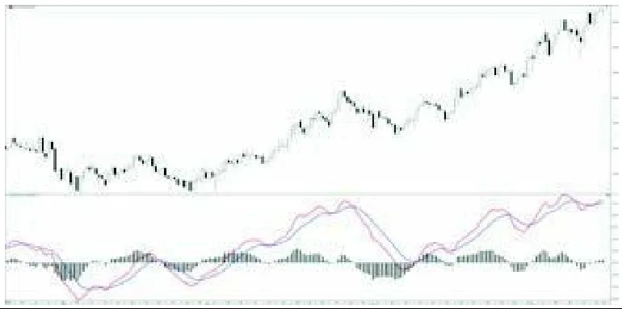
MACD 柱状图 ⇨ 快线（MACD）– 慢线（Signal）
若研究中出现某几个周期没有柱状图的情形，其含义是 MACD 两条线恰好重合于同一点。
MACD 不同于其他指标，它没有上限也没有下限，可上可下、没有顶底，也不存在超买或超卖区——这一点我们在下一章研究随机指标（estocástico）时会看到；但 0 轴极其重要，因为我们将把它视为操作的平衡点与参考基准。
0 轴之上，我们持偏多倾向；0 轴之下，持偏空倾向。时间框架越大，这种倾向的重要性越高，因为周线级别已具很强力度，月线级别更甚。
如果我们观察图26，科技指数 Nasdaq100 在 2014 年 1—2 月、4—5 月以及 10 月，MACD 都位于零轴下方，因为该标的经历了重要的修正。但我们并不会因此就建立空头头寸，因为价格的运行轨迹依然向上，且我们在第 10 章研究过的移动平均线仍处上升趋势（MA70 > MA200、正斜率），所以我们将等待机会站到多头一侧。
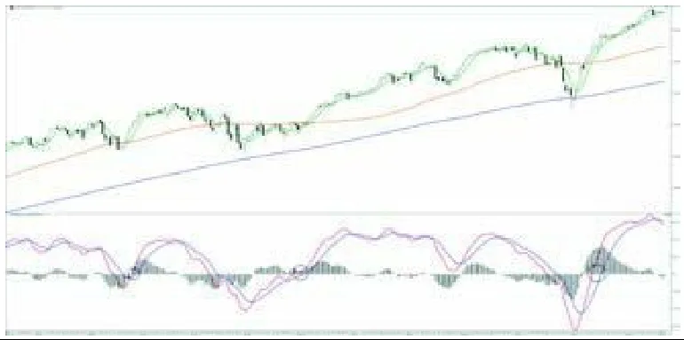
我们何时建立多头头寸？
MACD 上穿 0 轴
当 MACD 上穿 0 轴时，它会给出买入信号。用哪条线？快线还是慢线？两条线都能给，但慢线赋予操作的效度最高。依你们攻击性的强弱，可以用快线进场。在大多数以快线上穿 0 轴进场的情形中，你们得到的价位会比等慢线上穿 0 轴更划算；但在另一些情形中，慢线无力上穿 0 轴，这将拖累快线回落，造成一次失败的交易。
若求稳妥，就等慢线上穿 0 轴；若想更大胆些，可在快线上穿时动手。
正如在图26中所见，快线总是先给我们第一个进场信号，两到四天之后慢线再给一次机会，因此由于价格横盘，信号可能会延续得更久一些。
我们何时建立空头头寸？
MACD 跌破 0 轴
显然，首先我们必须识别出一个主要下降趋势，期间价格出现过反弹，引发一轮次要的看涨修正阶段；在此阶段中，我们仍有 MA70 < MA200，且最好两条均线都呈负斜率。
当 MACD 两条线跌破 0 轴时，我们就建立空头头寸，这会生成两次入场：第一次由快线触发，其后由慢线触发。
请看图27，在 2012 年 3 至 4 月间，法国 CAC40 成分股家乐福（Carrefour）除了出现 MA6 向下穿越 MA70 外，还生成了上述两次做空入场信号。
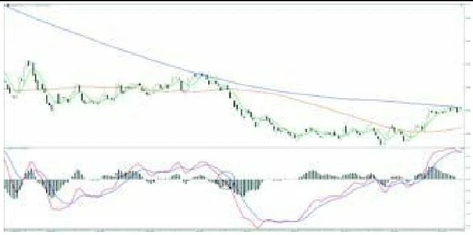
主要上升趋势确立后，价格会有小幅修正，但程度不足以让 MACD 恶化到跌破 0 轴。
在这些情形中，MACD 会向下交叉，但继续停留在 0 轴之上。这是该方法赐予我们的绝佳机会：我们要求快线掉头向上、并能上穿慢线，这便是一个很好的、让我们重新加入趋势的信号。火车做了一次小小的停靠，好让我们上车。
请看图28，Acerinox（阿赛里诺克斯）在 2014 年 1 月修正阶段结束后上穿 0 轴，给了我们一个极其清晰的做多入场信号。如果你们错过了那第一波启动，随后在 2 月、4 月和 6 月，该方法又给出了三个让我们上车的信号。
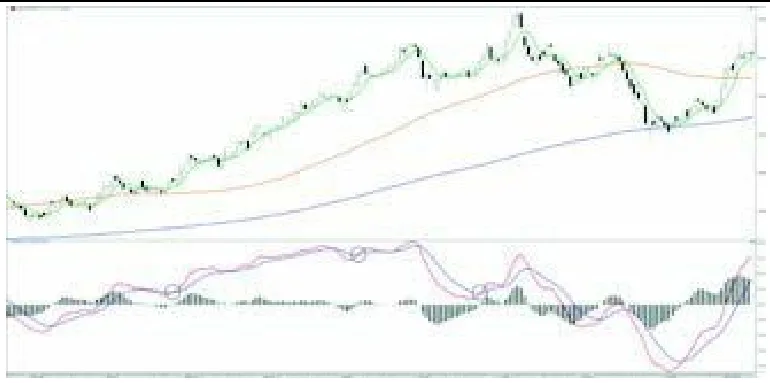
我建议激进型交易者采用这种入场，但必须提醒你们，它不如此前所说的那些信号可靠。
如果顺我们的意，我们将在次要修正阶段的最低价格处进入市场。不过，如果我们无法读懂价格正在画出的图形，那它可能只是艾略特（Elliot）平坦型调整中的 B 浪，从而给我们一个假信号——因为还缺一个下跌的 C 浪，我们很可能会做错这笔交易。
请看 2013 年 12 月 Sacyr（如图29所示）如何在巴拿马运河工程停工公告（2014 年 1 月 1 日）之前，连续给了我们三次入场；随后便出现一个向下跳空缺口（gap），并在首个交易日开盘时剧烈下挫。
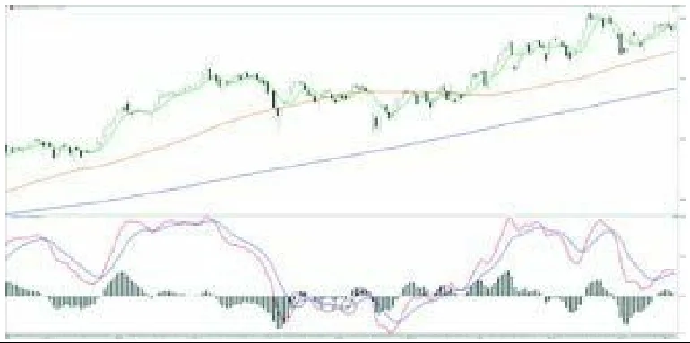
然而，我们也应当观察图30，其中德国 DAX 在一年内给了我们三次极佳的入场。
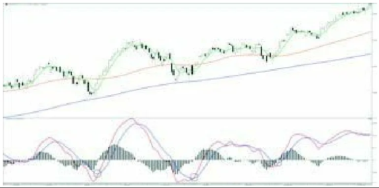
我建议你们，若想运用这一技法，请选择大型指数，如 S&P500、Nasdaq、DAX、CAC、IBEX35 等，因为它们不像个股那样容易受到重大跳空开盘的影响——个股会在市场休市期间发布的任何消息冲击下剧烈波动。
在上升趋势中，经过一轮修正后，若 MACD 恰好在 0 轴或极接近 0 轴处形成向上交叉，会给我们带来绝佳的入场。
请看 2013 年 9 月 Gamesa（歌美飒，图31）如何结束了一轮修正，并以恰好位于 0 轴的向上交叉来「庆祝」，从而在约一个月里推动该标的几乎连续上涨。
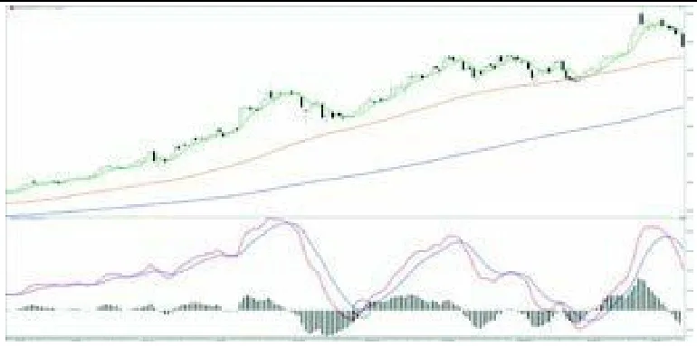
你们不应放过这些交叉，相反，这正是我们应当显著加大交易名义金额的操作。
与「MACD 向下交叉但继续位于 0 轴之上」的情况类似——只是此处方向相反——面对一轮根本性的下降趋势，当 MACD 向下交叉、位于 0 轴之下（且在一轮小型修正阶段结束后，MACD 无力上穿 0 轴，显示该标的疲弱）时，我们便可顺势加入。
如图32所示，以美元计价的黄金（XAUUSD）在 2013 年 4 月、5 月和 6 月给了我们做空入场的机会。
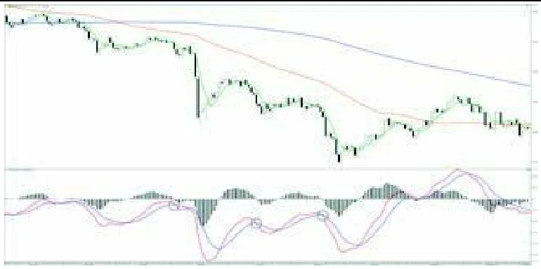
继续看 XAUUSD（图33），我们可以观察到 2013 年 9 月该方法给了我们一次很好的做空入场，但必须提醒，这个位于 0 轴之上的向下交叉，比位于 0 轴之下的更危险。尽管你们会看到这次交叉后的跌幅不小，但如果你们这样操作，要更仔细地看护好已开仓位。这一信号，等同于上升趋势中「MACD 在 0 轴之下向上交叉」的情形。
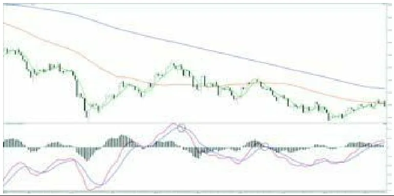
最后，XAUUSD 在 2013 年 11 月于 0 轴处恰巧赐予我们一次向下交叉，这同时也与 MA6 向下穿越 MA70 的同类交叉相吻合（图33）。
正如你们已经注意到的，在主要上升趋势中，当 MACD 在 0 轴之上向下交叉，我们便面对一轮修正阶段；同理，在主要下降趋势中，当 MACD 在 0 轴之下向上交叉，也是如此。
MACD 逆着趋势方向的「切割」，「原则上」告诉我们修正已经开始。而我之所以说「原则上」，是因为有时最终趋势会被彻底逆转。
我们是交易者，但不是算命先生，因此应当回避修正阶段，置身其外、离场观望，因为我们无从知晓这次修正的幅度是 2%、10% 还是更大，或者最终会不会直接反转。
还记得 2011 年夏天的黄金泡沫吗？当时金价一度站上每盎司 1 920 美元。在技术分析上，那里难道没有出现过一次「MACD 在 0 轴之上向下交叉」、预告着一轮修正吗？而到了 2014 年，金价最终跌破了 1 132 美元。请看图34。
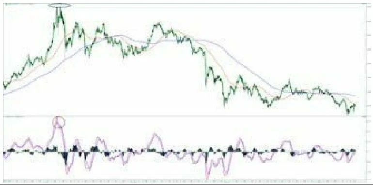
我们来仔细研究 Atresmedia（图35）。2013 年 8 月，其上升趋势毋庸置疑；当 MACD 向下切割时，它一口气修正了 14%！图形非常漂亮，之后一切仍延续升势，但……要扛住超过 10% 的回撤……！我向你们保证，那真的很疼。随后，从 10 月到 12 月，又出现了一轮高达 18.8% 的修正段！试问谁能在持仓状态下扛住这个？
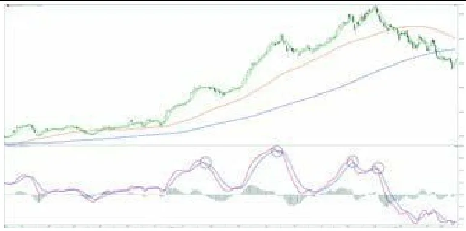
尽管图上看起来不像是，但到 2014 年又出现了一次 13% 的回撤。
而我此前想让你们看到的，终究会到来——暴跌总会来。该标的在 2014 年仅用三个月就跌去了 36.5%。
所以，请保持谨慎；面对修正阶段，你们应当选择落袋为安，并把该标的列入观察名单，万一它再度反转、又给我们一次进场的机会。
这样操作，我们将收获两件基本的事情：
背离是指价格的运行轨迹与 MACD 指标之间的矛盾。它让我们保持警觉，警示一轮修正可能到来，或会走得更远，从而引发中期趋势的改变。
每当我们分析一只标的，都必须察觉它是否在创出新的高点或低点。如果出现，MACD 应当配合价格；若不配合，就要拉响警报！
当价格创出新高、而 MACD 没有配合时，我们面对的是看跌背离（图36）。
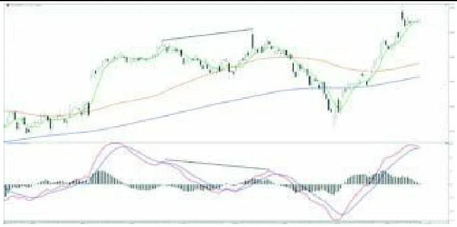
当价格创出新低、而 MACD 没有配合时，我们面对的是看涨背离（图37）。
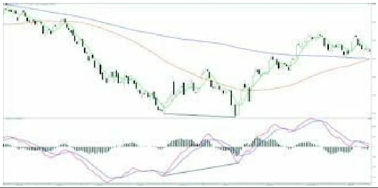
纽约珠宝商 Tiffany（图36）创出新高；相反，MACD 却没能做到，从而引发了一轮高达 20% 的严重修正。
同理，但方向相反，IBEX35（图37）创出新低，而 MACD 没能跟上。于是一轮强劲反弹启动，最终演化为上升趋势的转变，并一直延续到 2014 年底——指数从 6 000 点出头一路突破 11 000 点。
请看图38中的欧元美元（EURUSD）货币对：2012 年夏，当欧洲和欧元处处风雨飘摇，欧洲货币相对美元持续贬值。你们知道西班牙有多少人为了避险而把欧元换成其他货币吗？想必你们自己、或你们认识的人里，就有这么做的，或者把外币带到了国外。
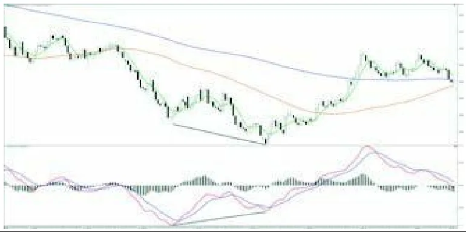
但欧元怎么会继续跌呢！你们难道没看到看涨背离吗？而且还不止于此——连我们的老朋友「新闻媒体」都在替我们喊话呢！「欧元糟透了」「欧元要崩」「西班牙可能会退出欧元区」……结果呢，并没有！当所有媒体都在大肆报道时，鱼早就卖光了。
根据相反意见理论（又有 MACD 看涨背离的佐证），欧元不会立刻继续下跌；至少，它会停下脚步走出横盘，或者出现一波像样的反弹，又或者最终改变趋势——而后者正是最终发生的事。
前面我们讲过，以美元计价的黄金因 MACD 在 0 轴之上向下交叉而开启了一轮修正。你们觉得在交叉发生之前，MACD 画出的是什么？是一段看跌背离！（图39）。
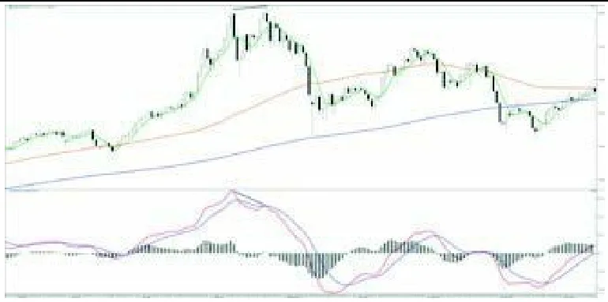
我们再回头看媒体。还记得 2014 年 1 月中旬，有关西班牙股指的新闻都是什么吗？「IBEX35 剑指 12 000 点。」那修正就是板上钉钉的了！面对极度的乐观，务必谨慎。
请研究图40，看它是如何提前预示那次回撤的——幅度一度超过 8%。
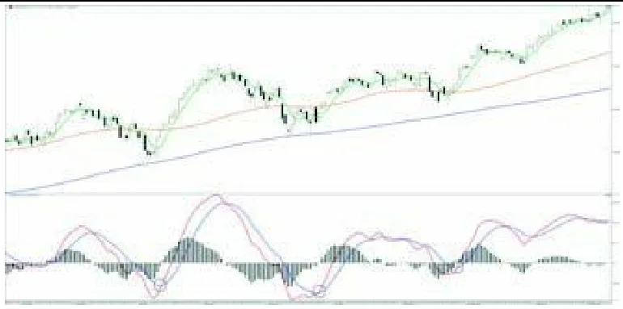
即便如此，1 月 24 日借着阿根廷比索和土耳其里拉的名义出现的那次超过 3% 的回撤，也绝不该让我们措手不及，因为 MACD 早已发出警告，且向下交叉就发生在前一天。
面对背离，我们该如何行动？
首要的是谨慎。做好平仓（了结顺势头寸）的准备，并在修正阶段得到确认期间离场观望。
如果我们处于上升趋势、持有多头，就要极度小心、了结头寸，最迟也要在 MACD 向下交叉时离场。
如果我们处于下降趋势、持有空头，最迟也要在 MACD 向上交叉时了结。
反之，如果我们并未持仓、只是因为看到价格创出新高或新低而想入场，那么绝不要在出现与价格背离时建立头寸。
MACD 的失败形态是一类特殊的背离，比此前所见的背离更可靠。
面对它们时的应对方式与普通背离相同。无论如何，都不能被市场打个措手不及。
看跌含义的「看涨失败形态」
价格经历一次回撤，导致 MACD 快线向下穿越慢线。
价格重新上行，创出新高。
这使得快线掉头向上、试图上穿慢线，却未能成功穿越，随即剧烈地掉头向下。
2013 年底，高露洁棕榄（Colgate Palmolive，图41）出现了具有看跌含义的看涨失败形态，使其回落 11%，从而陷入一段长达六个月、直至回到失败形态前高点的修正。
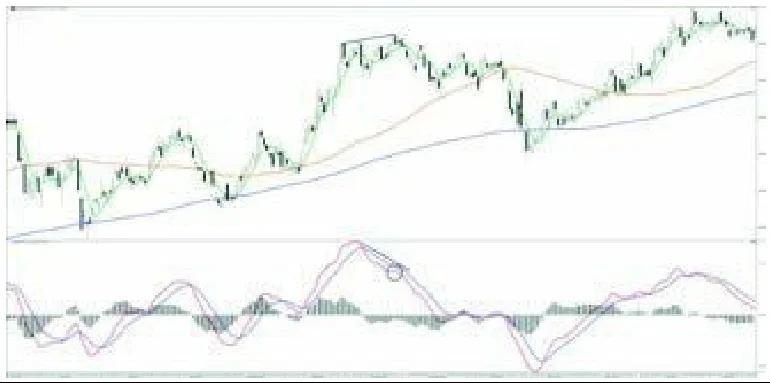
看涨含义的「看跌失败形态」
价格经历一次回撤，导致 MACD 快线向上穿越慢线。
价格重新下行，创出新低。
这使得快线掉头向下、试图下穿慢线；却未能成功穿越，随即剧烈地掉头向上。
在 MACD 看跌失败形态之后，美国能源公司 Cabot Oil & Gas（图42）开启了一轮强劲反弹，最终演变为趋势转变，股价一度翻了三倍。
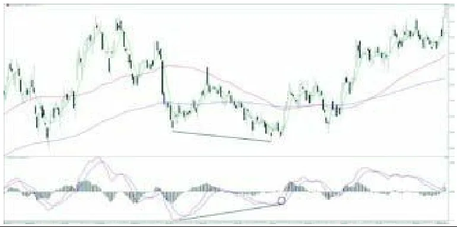
在结束本章之前，我想做一点反思。我常常撞见一些关于 MACD 的评论，而且不仅针对它，而是针对所有指标，以及
广义上的各类震荡指标；有些学员在社交媒体上读到说它「是一个滞后指标、不够稳健、动不动就失效」等等。
好吧，我首先要向那些一口咬定「指标毫无用处」的人提出的问题是：您会读市场吗？您理解指标的运行机理吗？是谁告诉您，单凭指标本身就能告诉我们该买还是该卖？您在市场中操作吗？用的是实盘账户吗？
只要对上述任何一个问题的回答是「不」，我对您关于指标的意见和断言就毫无兴趣，因为这恰恰向我证明，您根本什么都没弄懂。
任何被孤立使用的指标，都好比拎起汽车的一只轮子，看它自己会不会转起来……
如果你们仅仅因为 MACD 出现了一次交叉或上穿 0 轴就进场，那是不够的。你们必须会读价格的运行轨迹，识别主要趋势，以及可能出现的「次要趋势与主趋势方向相反」的情形，解读中周期与长周期均线的排列与斜率，识别强势的国家与强势的板块，并在其中找出最强的标的。唯有此时，指标才能发挥出更大的效能与收益。
施加的条件越多，对标的的筛选就越严格，最终可操作的标的数量虽少，但可靠性更高。说到底，全球有成千上万只标的，我只要有少数几只就足够操作了；少而精。
请记住：趋势是您的朋友，MACD 是您的挚友。朋友是要呵护、要珍视的，不是用来轻视的。
「图N」为原书插图编号，插图放在第一次提到它的段落之后；书中观点与例子属于作者，本站读图课另有独立说明，二者不代表买卖建议。
读图课程更新：2026-10-20。例子用于帮助读懂图表，不代表买卖建议。